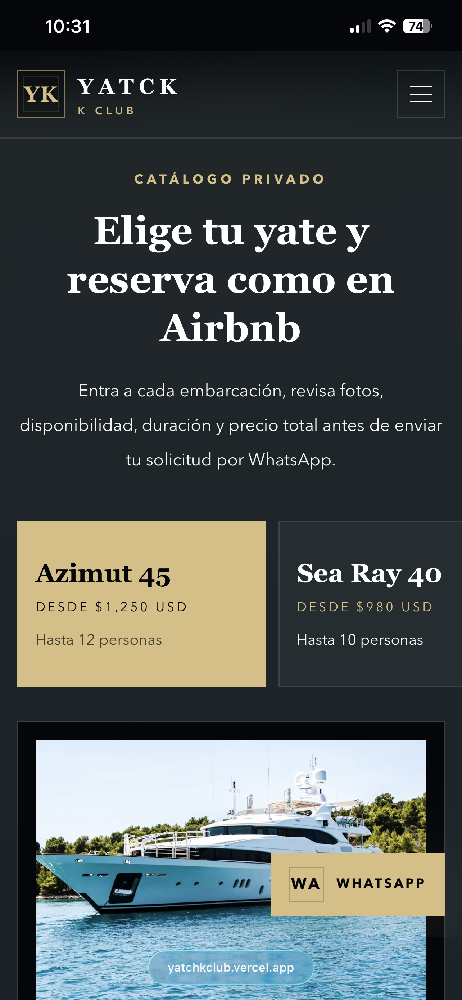
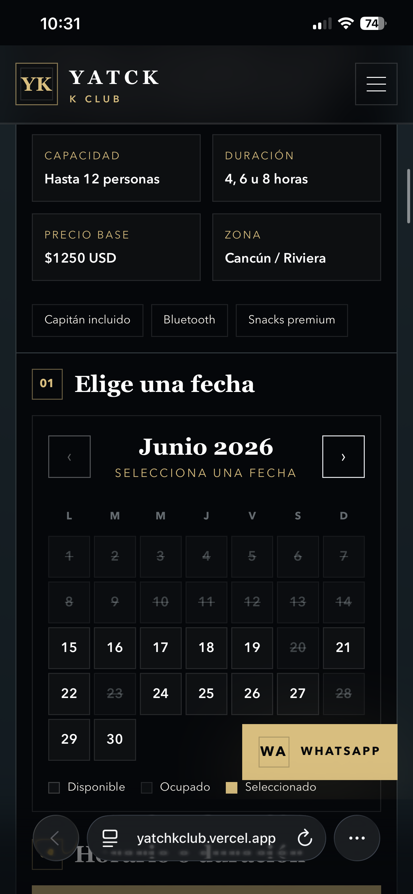

Mobile App Development
Native-feeling products built for real workflows.
Software · Products · Technology
Building digital products with presence.
Software Developer · Entrepreneur · Tech Specialist

Services
Native-feeling products built for real workflows.
Sharp, fast, responsive web experiences.
Interfaces with polish, motion and clarity.
APIs and systems that support the product.
Subscription-ready platforms from concept to launch.
Cleaner journeys, stronger screens, better flow.
Ideas shaped into focused product experiences.
Requirements, workflows and decisions made visible.
Practical guidance across product and technology.
Diagnostics, repair and hands-on technical support.
Projects

Mobile application
Discipline system for consistency, accountability and growth.
Founder · Designer · Developer



Flagship full-stack platform
Luxury yacht reservation platform with catalog browsing, availability workflows, inquiry capture and admin-ready backend architecture.
Full Stack Developer · Product Design · Backend Architecture
Social impact platform
Guidance, employment resources and structured reintegration.
Product Strategy · Platform Concept
Digital concierge
Immigration and documentation workflows with concierge clarity.
Product Design · Business Analysis
Client platform
Luxury yacht discovery, pricing clarity and reservations.
Web Developer · Designer · Consultant

Client website
Repair services, diagnostics, trust and lead generation.
Web Developer · Designer · Consultant
Flagship Project
A mobile-first luxury yacht reservation platform designed to help customers explore experiences, compare yachts, select destinations and submit high-intent booking requests through a polished reservation workflow.
Technology Stack
Key Features
Fleet browsing with yacht details, capacity, pricing signals and premium visuals.
Customer inquiry flow that captures booking details and prepares requests for follow-up.
Date selection and scheduling logic designed around yacht availability workflows.
Manageable routes, yacht experiences and destination content for Cancún, Isla Mujeres and Riviera Maya.
Automated reservation communication powered by transactional email infrastructure.
Operational foundation for managing yachts, packages, destinations and customer requests.
Architecture Overview
The platform separates the customer-facing Expo application from an Express API and PostgreSQL database. Reservation requests, yacht inventory, destination content, package rules and notification events are modeled as backend resources so the business can scale beyond a static marketing site.
Mobile Screenshots

About
I’m currently studying Software Engineering while building digital products, mobile applications and web platforms.
Contact
Available for freelance projects, collaborations and technology opportunities.